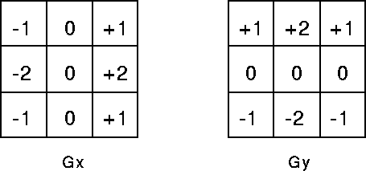

Filtrado de imágenes
Contenido
%matplotlib inline
import numpy as np
import matplotlib.pyplot as plt
from matplotlib import rcParams
rcParams['figure.dpi'] = 120
from scipy import fftpack
def color2bw(img):
return np.dot(img, [0.299, 0.587, 0.114])
6. Filtrado de imágenes¶
En esta lección veremos:
Filtrado con máscaras en frecuencia
Filtrado con convolución 2D
6.1. Filtro en frecuencia¶
Recordemos que
Una multiplicación en el espacio de frecuencia equivale a una convolución en el espacio original
Podemos usar esta propiedad para hacer filtrado
Calculamos el espectro de la imagen usando la DFT
Multiplicamos el espectro por una ventana
Aplicamos DFT inversa para obtener la imagen filtrada
Ejemplo: Filtro pasa-bajos
Sea una imagen de ejemplo.
Usamos scipy.fftpack.fft2 para calcular su transformada de Fourier
img_example = color2bw(plt.imread("../images/InsInformatica.jpg"))
S_img = fftpack.fft2(img_example)
fig, ax = plt.subplots(1, 2, figsize=(8, 3.5), tight_layout=True);
ax[0].imshow(img_example, cmap=plt.cm.Greys_r)
ax[0].set_title('Imagen de ejemplo')
ax[1].imshow(fftpack.fftshift(np.log(1+np.abs(S_img))), cmap=plt.cm.Spectral_r)
ax[1].set_title('Espectro de amplitud');
Multipliquemos el espectro por una ventana rectangular que multiplique por cero las frecuencias altas
Eliminar las frecuencias altas suaviza la imagen. Esto puede usarse para eliminar ruido a costa de perder detalles
Luego tomamos la transformada de Fourier inversa del espectro multiplicado
Observe como cambia el resultado a medida que disminuimos progresivamente el tamaño de la ventana (sigma)
def create_mask(img_shape, sigma):
cy, cx = img_shape[0]/2, img_shape[1]/2
x = np.arange(0, img_shape[1]);
y = np.arange(0, img_shape[0]);
X, Y = np.meshgrid(x, y)
mask = np.zeros_like(S_img, dtype=np.float32)
mask[int(cy-sigma):int(cy+sigma),
int(cx-sigma):int(cx+sigma)] = 1
return mask
fig, ax = plt.subplots(3, 2, figsize=(8, 8), tight_layout=True, sharex=True, sharey=True);
for i, sigma in enumerate([100, 40, 10]):
espectro_filtrado = fftpack.fftshift(S_img)*create_mask(img_example.shape, sigma)
ax[i, 0].imshow(np.log(1+np.abs(espectro_filtrado)), cmap=plt.cm.Spectral_r)
image_reconstruida = np.real(fftpack.ifft2(fftpack.ifftshift(espectro_filtrado)))
ax[i, 1].imshow(image_reconstruida, cmap=plt.cm.Greys_r)
Para evitar artefactos causados por los bordes abruptos de la señal rectangular podemos reemplazar la misma por una ventana Gaussiana
Esta operación se suele llamar “suavizado gaussiano”
def create_mask(img_shape, sigma):
cy, cx = img_shape[0]/2, img_shape[1]/2
x = np.arange(0, img_shape[1]);
y = np.arange(0, img_shape[0]);
X, Y = np.meshgrid(x, y)
return 1e-8 + np.exp(-(((X-cx)/sigma)**2 + ((Y-cy)/sigma)**2))
fig, ax = plt.subplots(3, 2, figsize=(8, 8), tight_layout=True, sharex=True, sharey=True);
for i, sigma in enumerate([100, 40, 10]):
espectro_filtrado = fftpack.fftshift(S_img)*create_mask(img_example.shape, sigma)
ax[i, 0].imshow(np.log(1+np.abs(espectro_filtrado)), cmap=plt.cm.Spectral_r)
image_reconstruida = np.real(fftpack.ifft2(fftpack.ifftshift(espectro_filtrado)))
ax[i, 1].imshow(image_reconstruida, cmap=plt.cm.Greys_r)
Ejemplo: Filtro pasa-altos
Si usamos el inverso de una ventana gaussiana entonces estaríamos multiplicando por cero las frecuencias más bajas
Esto borra los colores, dejándo sólo los detalles o bordes
Observe como cambia el resultado a medida que borramos más frecuencias bajas
def create_mask(img_shape, sigma):
cy, cx = img_shape[0]/2, img_shape[1]/2
x = np.arange(0, img_shape[1]);
y = np.arange(0, img_shape[0]);
X, Y = np.meshgrid(x, y)
return 1.0 - np.exp(-(((X-cx)/sigma)**2 + ((Y-cy)/sigma)**2))
fig, ax = plt.subplots(3, 2, figsize=(8, 8), tight_layout=True, sharex=True, sharey=True);
for i, sigma in enumerate([10, 40, 100]):
espectro_filtrado = fftpack.fftshift(S_img)*create_mask(img_example.shape, sigma)
ax[i, 0].imshow(np.log(1+np.abs(espectro_filtrado)), cmap=plt.cm.Spectral_r)
image_reconstruida = np.real(fftpack.ifft2(fftpack.ifftshift(espectro_filtrado)))
ax[i, 1].imshow(image_reconstruida, cmap=plt.cm.Greys_r)
6.2. Filtrado en el dominio de la imagen¶
También podemos filtrar una imagen en su espacio original usando la convolución bidimensional
El elemento que se convoluciona con la imagen se denomina filtro o kernel de convolución
La siguiente animación muestra el proceso de convolución en dos dimensioens

¿Qué cree usted que hacen estos los siguientes kernels/filtros?
Respuesta: Ambos son filtros promediadores, es decir que reemplazan cada pixel por un promedio de sus vecinos. Estos filtros actuan como pasa-bajos ya que suavizan la imagen.
Scipy ofrece dos funciones para hacer convolución
convolve2d: Convolución tradicional, es más rápido cuando la imagen y el filtro son pequeños
fftconvolve: Convolución multiplicando en frecuencia, es más rápido cuando la imagen y el filtro son grandes
from scipy.signal import fftconvolve, convolve2d
fig, ax = plt.subplots(1, 2, figsize=(8, 3.5), tight_layout=True);
size = 20
kernel = np.ones(shape=(size, size))/size**2
img_filtered1 = fftconvolve(img_example, kernel, mode='same');
img_filtered2 = convolve2d(img_example, kernel, mode='same');
ax[0].set_title('fftconvolve')
ax[0].imshow(img_filtered1, cmap=plt.cm.Greys_r)
ax[1].set_title('convolve2d')
ax[1].imshow(img_filtered2, cmap=plt.cm.Greys_r);

Ejemplo: Detección de borde con filtro Sobel
Los siguientes filtros se conocen como sobel horizontal y vertical
{kind=link}
Se utilizan para resaltar los bordes de la imagen
fig = plt.figure(figsize=(7, 7), tight_layout=True)
sobelx = fftconvolve(img_example, [[-1, 0, 1],
[-2, 0, 2],
[-1, 0, 1]], mode='full')
ax = plt.subplot2grid((2, 2), (0, 0))
ax.matshow(sobelx, cmap=plt.cm.Greys_r);
ax.axis('off')
ax.set_title('Sobel vertical')
sobely = fftconvolve(img_example, [[-1, -2, -1],
[0, 0, 0],
[1, 2, 1]], mode='full')
ax = plt.subplot2grid((2, 2), (0, 1))
ax.matshow(sobely, cmap=plt.cm.Greys_r)
ax.axis('off')
ax.set_title('Sobel horisontal')
ax = plt.subplot2grid((2, 2), (1, 0), colspan=2)
ax.matshow(np.sqrt(sobely**2 + sobelx**2)[3:-3,3:-3], cmap=plt.cm.Greys_r)
ax.axis('off')
ax.set_title('Combinación');

6.3. Ruido en imágenes¶
Existen distintos tipos de ruido que pueden afectar una imagen
Ruido térmico, ruido de lectura, ruido eléctronico: Se modelan tipicamente como ruido blanco Gaussiano
Ruido sal y pimienta o Ruido impulsivo: Se traduce en píxeles que se saturan en sus valores máximos/mínimos
Interferencia periódica: Puede modelarse como una sinusoide
A continuación mostraremos como se ven estos ruidos para aprender a reconocerlos
También veremos como disminuir sus efectos usando filtros
Considere la siguiente imagen de ejemplo:
from ipywidgets import interact, FloatSlider, IntSlider, FloatLogSlider
img_example = color2bw(plt.imread('../images/lobo.jpg'))
fig, ax = plt.subplots(figsize=(6, 3.5), tight_layout=True)
ax.imshow(img_example, cmap=plt.cm.Greys_r)
ax.axis('off');
Así se vería si la corrompemos añadiendo ruido blanco gaussiano con una desviación estándar de \(20\)
fig, ax = plt.subplots(figsize=(6, 3.5), tight_layout=True)
sigma = 20
noise = np.random.randn(img_example.shape[0], img_example.shape[1])
img_corrupted = img_example + sigma*noise
ax.matshow(img_corrupted, cmap=plt.cm.Greys_r)
ax.axis('off');
El ruido blanco se presenta en todo el espectro
Por ende no es posible eliminarlo completamente pero podemos disminuir su efecto usando un filtro pasabajo
Para llegar a un buen resultado se debe calibrar el tamaño del filtro. En este caso particular un filtro rectangular de tamaño \(5\) entrega un resultado aceptable
fig, ax = plt.subplots(figsize=(6, 3.5), tight_layout=True)
size = 5
kernel = np.ones(shape=(size, size))/size**2
img_filtered = fftconvolve(img_corrupted, kernel, mode='same')
ax.matshow(img_filtered, cmap=plt.cm.Greys_r)
ax.axis('off');
Ejemplo: Eliminar ruido impulsivo
El ruido impulso o ruido sal y pimienta aparece como pixeles saturados en la imagen
Un filtro tipicamente usando para disminuir este ruido es el filtro mediana. Si se aplica la mediana en una vecindad los valores extremos serán ignorados
from scipy.signal import medfilt
noise = np.random.rand(*img_example.shape)
img_corrupted = np.where(noise < 0.1, 255, img_example)
img_filtered = medfilt(img_corrupted, 5)
fig, ax = plt.subplots(1, 2, figsize=(6, 3.5), tight_layout=True, sharex=True, sharey=True)
ax[0].matshow(img_corrupted[:, 100:600], cmap=plt.cm.Greys_r)
ax[0].set_title('Imagen con ruido impulsivo')
ax[0].axis('off')
ax[1].matshow(img_filtered[:, 100:600], cmap=plt.cm.Greys_r)
ax[1].set_title('Limpieza con filtro mediana')
ax[1].axis('off');
Ejemplo: Eliminar ruido periódico
Es un ruido que tiene frecuencia y dirección
En este ejemplo el ruido tiene una dirección vertical
fig, ax = plt.subplots(figsize=(6, 3.5), tight_layout=True)
X, Y = np.meshgrid(np.arange(0, img_example.shape[1]), np.arange(0, img_example.shape[0]))
img_corrupted = img_example + 200*np.cos(2.0*np.pi*40*Y/img_example.shape[0])
ax.matshow(img_corrupted, cmap=plt.cm.Greys_r)
ax.axis('off');
El espectro de la imagen anterior (enventanada) es:
win = np.dot(np.hanning(img_corrupted.shape[0]).reshape(-1, 1),
np.hanning(img_corrupted.shape[1]).reshape(1, -1))
fig, ax = plt.subplots(figsize=(6, 3.5), tight_layout=True)
S_img = fftpack.fftshift(fftpack.fft2(img_corrupted*win))
ax.matshow(np.log(np.absolute(S_img)+1), cmap=plt.cm.Spectral_r)
ax.axis('off');
Note los dos puntos oscuros que aparecen en la vertical a una misma distancia del centro
Recordemos que estos impulsos en frecuencia corresponen a una sinusoide en la imagen
El ruido periodico se traduce como un punto en el espectro
Idea
Podríamos intentar “borrar” los componentes frecuenciales asociados al ruido usando una mascara multiplicativa correctamente posicionada
X, Y = np.meshgrid(np.arange(0, img_example.shape[1]),
np.arange(0, img_example.shape[0]))
freq_x = fftpack.fftshift(fftpack.fftfreq(n=img_example.shape[1]))
freq_y = fftpack.fftshift(fftpack.fftfreq(n=img_example.shape[0]))
def create_mask(dims, frequency, size=10):
freq_int = int(frequency*dims[0])
mask = np.ones(shape=(dims[0], dims[1]))
mask[dims[0]//2-size-freq_int:dims[0]//2+size-freq_int,
dims[1]//2-size:dims[1]//2+size] = 0
mask[dims[0]//2-size+freq_int:dims[0]//2+size+freq_int,
dims[1]//2-size:dims[1]//2+size] = 0
return mask
S_img = fftpack.fftshift(fftpack.fft2(img_corrupted))
espectro_filtrado = S_img*create_mask(S_img.shape, 0.06)
# Reconstrucción
img_reconstructed = np.real(fftpack.ifft2(fftpack.ifftshift(espectro_filtrado)))
fig, ax = plt.subplots(1, 3, figsize=(8, 6), tight_layout=True)
ax[0].matshow(img_corrupted[:, 200:500], cmap=plt.cm.Greys_r);
ax[1].imshow(np.log(1+np.abs(espectro_filtrado))[100:-100, 400:-400], cmap=plt.cm.Spectral_r,
extent=(freq_x[400], freq_x[-400], freq_y[100], freq_y[-100]))
ax[2].matshow(img_reconstructed[:, 200:500], cmap=plt.cm.Greys_r);
Algunas causas de degradación de calidad en imágenes:
Manipulación: Desenfoque
Ambiente: Reflejos y dispersión de luz
Dispositivo: Ruido del sensor y circuitos
Ruido de cuantización